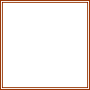

Cluster Constant
Owning Palette: Cluster, Class, & Variant VIs and Functions
Requires: Base Development System
Use this constant to supply a constant cluster value to the block diagram.

 Add to the block diagram Add to the block diagram |
 Find on the palette Find on the palette |
The elements of the cluster can be different types. Define a cluster constant by selecting any user-defined constant on the Functions palette and placing it inside the cluster constant. Edit each cluster element value by using the Operating tool and the Labeling tool.
You cannot change the value of the cluster constant while the VI runs.
 | Note To reduce the size of cluster constants on the block diagram, right-click the cluster constant and select View Cluster As Icon from the shortcut menu. To undo this change, select View Cluster As Icon again from the shortcut menu. You also can double-click the frame of the cluster constant to view it as an icon. To undo this change, double-click the cluster constant icon. |